Semana 3: Dinámica sobre Redes#
Systems Analytics — MISE#
Objetivo: Entender cómo se propagan fenómenos (información, adopción tecnológica, fallas) a través de redes, y aplicar estos modelos al sector energético colombiano.
Nivel |
Tema |
Enfoque |
|---|---|---|
Nivel 1 — Intuición |
Contagio, umbrales, curva S |
Algoritmos visibles, analogías |
Nivel 2 — Energía |
Adopción solar, mercado mayorista |
Datos colombianos |
Nivel 3 — Profesional |
ABM, resiliencia, política |
Herramientas avanzadas |
import sys; sys.path.insert(0, '.')
from mise_utils import viz, energy_data
from mise_utils import diffusion
from mise_utils.viz import COLORS
import networkx as nx
import numpy as np
import matplotlib.pyplot as plt
import pandas as pd
viz.apply_mise_style()
print("Semana 3 cargada correctamente")
print(f" NetworkX {nx.__version__}")
Semana 3 cargada correctamente
NetworkX 3.1
Nivel 1 Nivel 1 — Intuición: ¿Cómo se propagan las cosas en redes?#
En la Semana 2 aprendimos a describir redes. Ahora la pregunta es: ¿qué sucede sobre ellas? Un rumor, un virus, una tecnología… todos se propagan por las conexiones.
1.1 El rumor en el salón de clase#
¿Cómo se esparce un rumor? Empecemos con el modelo más simple: contagio simple (SI).
Regla: En cada paso de tiempo, cada persona infectada le “cuenta” el rumor a cada vecino con probabilidad β.
Este es el algoritmo completo — léelo línea por línea:
# ═══════════════════════════════════════════════════════════════════
# ALGORITMO DE CONTAGIO SIMPLE (SI) — CÓDIGO VISIBLE
# ═══════════════════════════════════════════════════════════════════
def contagio_simple_manual(G, semilla, beta=0.15, n_pasos=20):
"""Modelo SI paso a paso — el estudiante puede leer cada línea."""
rng = np.random.default_rng(42)
# Paso 0: solo la semilla está infectada
infectados = {semilla}
historia = [infectados.copy()]
for paso in range(n_pasos):
nuevos = set() # nuevos infectados en ESTE paso
# Cada infectado intenta contagiar a sus vecinos
for nodo in infectados:
for vecino in G.neighbors(nodo):
if vecino not in infectados: # solo susceptibles
if rng.random() < beta: # con probabilidad β
nuevos.add(vecino)
# Actualizar: los nuevos se suman a los infectados
infectados = infectados | nuevos
historia.append(infectados.copy())
return historia
print("Función definida. Ahora vamos a usarla.")
Función definida. Ahora vamos a usarla.
# Crear una red tipo "salón de clase" (small-world)
G_salon = nx.watts_strogatz_graph(30, k=4, p=0.3, seed=42)
# Correr el contagio desde el nodo 0
historia = contagio_simple_manual(G_salon, semilla=0, beta=0.15)
# Graficar la curva de contagio
t, fraccion = diffusion.curva_contagio(historia, len(G_salon))
fig, ax = plt.subplots(figsize=(10, 5))
ax.plot(t, fraccion * 100, color=COLORS["danger"], linewidth=2.5, marker='o', markersize=4)
ax.fill_between(t, 0, fraccion * 100, color=COLORS["danger"], alpha=0.1)
ax.set_xlabel("Paso de tiempo")
ax.set_ylabel("% del salón que conoce el rumor")
ax.set_title("Propagación de un rumor en un salón de 30 estudiantes", fontweight="bold")
ax.axhline(y=50, color=COLORS["accent"], linestyle='--', alpha=0.6, label="50%")
ax.legend()
plt.tight_layout()
plt.show()
print(f"\nEl rumor llegó al {fraccion[-1]*100:.0f}% del salón en {len(historia)-1} pasos")
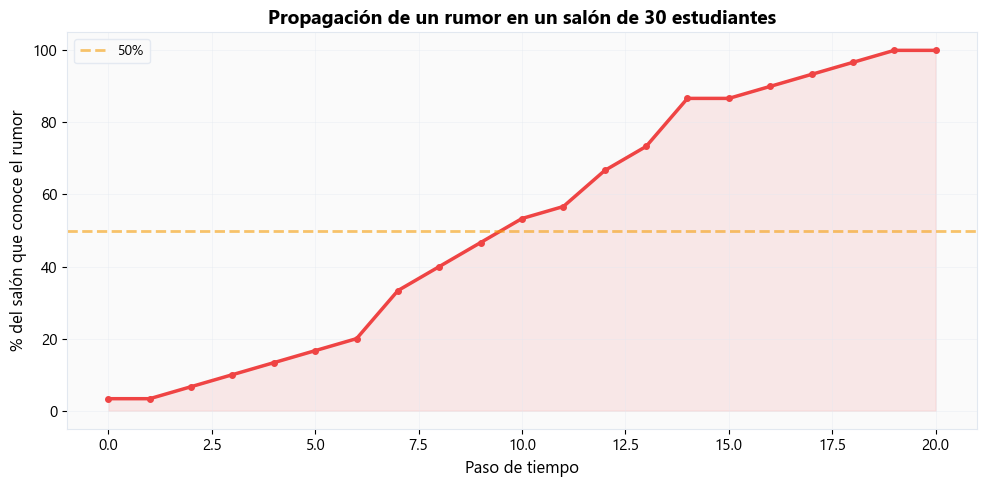
El rumor llegó al 100% del salón en 20 pasos
# Visualizar la propagación en la red
fig = diffusion.plot_propagacion(G_salon, historia)
plt.show()
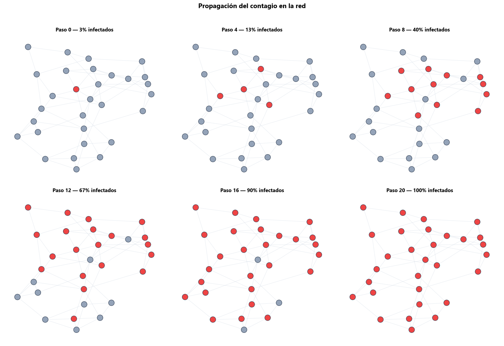
1.2 ¿Por qué todos usan WhatsApp? — Contagio simple vs complejo#
Contagio simple (rumor, virus): basta que UN vecino te lo pase → adoptas.
Contagio complejo (WhatsApp, paneles solares): necesitas que VARIOS vecinos ya lo usen → adoptas.
La diferencia es el umbral: ¿cuántos de mis contactos necesitan tenerlo para que yo lo adopte?
Comparemos ambos en la misma red:
# Red más grande para ver la diferencia
G_social = nx.watts_strogatz_graph(200, k=6, p=0.1, seed=42)
semillas = {0, 1, 2} # 3 personas empiezan
fig = diffusion.comparar_simple_vs_complejo(
G_social, semillas,
beta=0.08, # probabilidad de contagio simple
umbral=0.25, # umbral de contagio complejo (25% de vecinos)
n_pasos=40
)
plt.show()
print("**Nota:** Observa: el contagio simple es gradual y continuo.")
print(" El contagio complejo puede 'estancarse' o 'explotar' dependiendo del umbral.")
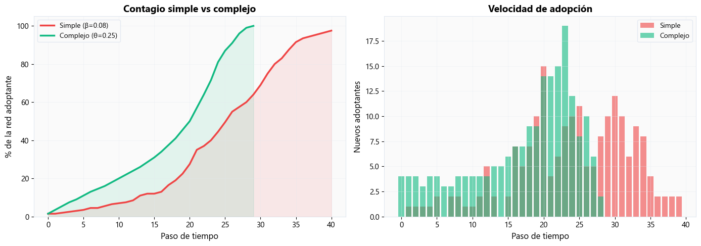
**Nota:** Observa: el contagio simple es gradual y continuo.
El contagio complejo puede 'estancarse' o 'explotar' dependiendo del umbral.
1.3 El modelo de umbrales — ¿cuándo ocurre una cascada? ️#
Cada persona tiene un umbral personal: la fracción de vecinos que necesitan haber adoptado para que ella también adopte.
Este es el algoritmo completo del modelo de cascada por umbrales:
# ═══════════════════════════════════════════════════════════════════
# MODELO DE CASCADA POR UMBRALES — CÓDIGO VISIBLE
# ═══════════════════════════════════════════════════════════════════
def cascada_umbrales_manual(G, semillas, umbrales):
"""Modelo de umbral paso a paso — el estudiante puede leer cada línea."""
adoptantes = set(semillas)
historia = [adoptantes.copy()]
for paso in range(50): # máximo 50 pasos
nuevos = set()
for nodo in G.nodes():
if nodo not in adoptantes:
# Contar vecinos que ya adoptaron
vecinos_adoptantes = sum(
1 for v in G.neighbors(nodo) if v in adoptantes
)
# Calcular la fracción
fraccion = vecinos_adoptantes / max(G.degree(nodo), 1)
# ¿Supera mi umbral personal?
if fraccion >= umbrales[nodo]:
nuevos.add(nodo)
if not nuevos: # nadie nuevo adoptó → la cascada se detuvo
break
adoptantes = adoptantes | nuevos
historia.append(adoptantes.copy())
return historia
print("Función definida.")
Función definida.
# Comparar: umbrales bajos (cascada) vs altos (sin cascada)
G_cascada = nx.watts_strogatz_graph(200, k=6, p=0.1, seed=42)
semillas = {0, 1, 2, 3, 4}
# Caso 1: umbrales bajos → CASCADA
umbrales_bajos = diffusion.generar_umbrales(G_cascada, 'uniforme', seed=42)
# Caso 2: umbrales altos → SIN CASCADA
umbrales_altos = {n: 0.45 for n in G_cascada.nodes()}
hist_cascada = cascada_umbrales_manual(G_cascada, semillas, umbrales_bajos)
hist_no_cascada = cascada_umbrales_manual(G_cascada, semillas, umbrales_altos)
N = len(G_cascada)
t1, f1 = diffusion.curva_contagio(hist_cascada, N)
t2, f2 = diffusion.curva_contagio(hist_no_cascada, N)
fig, ax = plt.subplots(figsize=(10, 5))
ax.plot(t1, f1 * 100, color=COLORS["success"], linewidth=2.5, marker='o',
markersize=4, label="Umbrales bajos → CASCADA")
ax.plot(t2, f2 * 100, color=COLORS["danger"], linewidth=2.5, marker='s',
markersize=4, label="Umbrales altos → SIN cascada")
ax.fill_between(t1, 0, f1 * 100, color=COLORS["success"], alpha=0.1)
ax.set_xlabel("Paso de tiempo")
ax.set_ylabel("% de adopción")
ax.set_title("Cascada vs estancamiento: el umbral lo cambia todo", fontweight="bold")
ax.legend(fontsize=11)
ax.set_ylim(0, 105)
plt.tight_layout()
plt.show()
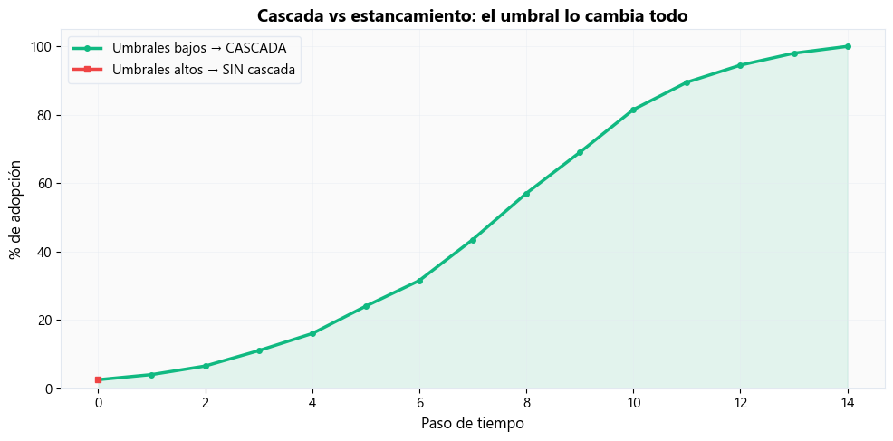
1.4 La curva S de Instagram#
¿Por qué la adopción de tecnologías tiene forma de S?
El modelo de Bass (1969) lo explica con dos fuerzas:
p (innovación): personas que adoptan por iniciativa propia (publicidad, curiosidad)
q (imitación): personas que adoptan porque ven que otros lo usan
La ecuación diferencial es:
donde \(F(t)\) es la fracción acumulada de adoptantes.
Nota: Nota: Formalizaremos las ecuaciones diferenciales ordinarias (ODEs) en la Semana 4 sobre Dinámica de Sistemas. Por ahora, enfoquémonos en la intuición de la curva S.
# Explorar el modelo de Bass con diferentes parámetros
fig, axes = plt.subplots(1, 3, figsize=(16, 5))
# Caso 1: Dominado por innovación (p alto)
t1, F1, dF1 = diffusion.resolver_bass(p=0.05, q=0.1, T=30)
axes[0].plot(t1, F1 * 100, color=COLORS["primary"], linewidth=2.5)
axes[0].fill_between(t1, 0, F1 * 100, color=COLORS["primary"], alpha=0.1)
axes[0].set_title("p=0.05, q=0.1\n(Publicidad domina)", fontweight="bold")
axes[0].set_ylabel("% adopción")
axes[0].set_ylim(0, 105)
# Caso 2: Dominado por imitación (q alto)
t2, F2, dF2 = diffusion.resolver_bass(p=0.005, q=0.5, T=30)
axes[1].plot(t2, F2 * 100, color=COLORS["danger"], linewidth=2.5)
axes[1].fill_between(t2, 0, F2 * 100, color=COLORS["danger"], alpha=0.1)
axes[1].set_title("p=0.005, q=0.5\n(Boca a boca domina)", fontweight="bold")
axes[1].set_ylim(0, 105)
# Caso 3: Mixto (caso típico)
t3, F3, dF3 = diffusion.resolver_bass(p=0.01, q=0.3, T=30)
axes[2].plot(t3, F3 * 100, color=COLORS["success"], linewidth=2.5)
axes[2].fill_between(t3, 0, F3 * 100, color=COLORS["success"], alpha=0.1)
axes[2].set_title("p=0.01, q=0.3\n(Caso típico)", fontweight="bold")
axes[2].set_ylim(0, 105)
for ax in axes:
ax.set_xlabel("Tiempo")
ax.axhline(y=50, color=COLORS["accent"], linestyle='--', alpha=0.5)
fig.suptitle("Modelo de Bass — La curva S según p y q",
fontsize=14, fontweight="bold", y=1.02)
plt.tight_layout()
plt.show()
print("**Nota:** Cuando q >> p, la curva S es más pronunciada (efecto 'boca a boca').")
print(" Cuando p es alto, la adopción arranca rápido pero sin 'explosión' social.")
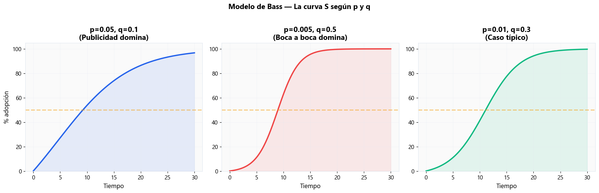
**Nota:** Cuando q >> p, la curva S es más pronunciada (efecto 'boca a boca').
Cuando p es alto, la adopción arranca rápido pero sin 'explosión' social.
Nivel 2 Nivel 2 — Energía: Difusión y redes en el sector eléctrico colombiano#
Ahora aplicamos los modelos de contagio y difusión al contexto energético real.
2.1 Adopción solar en un barrio — ¿Cuándo se alcanza el tipping point? ️#
La adopción de paneles solares es un caso clásico de contagio complejo:
No basta con que UN vecino tenga paneles
Necesitas ver que VARIOS vecinos lo hicieron (prueba social, información, confianza)
¿Qué pasa si el gobierno subsidia la instalación? El subsidio reduce el umbral de cada persona.
# Crear la red de un barrio
G_barrio = energy_data.crear_red_barrio(n_casas=100, tipo='small_world', seed=42)
# Semillas: 3 innovadores
semillas = {0, 10, 50}
# Simular con diferentes niveles de subsidio (que bajan el umbral)
subsidios = [0, 20, 40, 60] # % de subsidio
fig, axes = plt.subplots(2, 2, figsize=(14, 10))
axes = axes.flatten()
for idx, subsidio in enumerate(subsidios):
# Umbral base depende del ingreso; subsidio lo reduce
umbrales = {}
for n in G_barrio.nodes():
ingreso = G_barrio.nodes[n].get("ingreso", "medio")
base = {"alto": 0.15, "medio": 0.30, "bajo": 0.45}[ingreso]
umbrales[n] = max(0.05, base - subsidio / 100 * 0.3)
hist = diffusion.simular_contagio_complejo(G_barrio, semillas, umbrales)
t, f = diffusion.curva_contagio(hist, len(G_barrio))
ax = axes[idx]
ax.plot(t, f * 100, color=COLORS["accent"], linewidth=2.5)
ax.fill_between(t, 0, f * 100, color=COLORS["accent"], alpha=0.15)
ax.set_xlabel("Paso de tiempo")
ax.set_ylabel("% de adopción")
ax.set_title(f"Subsidio: {subsidio}% \u2192 {f[-1]*100:.0f}% adopción final",
fontweight="bold")
ax.set_ylim(0, 105)
ax.axhline(y=50, color=COLORS["danger"], linestyle='--', alpha=0.4)
fig.suptitle("Adopción solar en un barrio según nivel de subsidio",
fontsize=14, fontweight="bold", y=1.02)
plt.tight_layout()
plt.show()
print("**Nota:** Existe un 'punto de inflexión': un nivel de subsidio donde la adopción")
print(" pasa de estancarse a propagarse por toda la red.")
print(" \u2192 Esto ayuda a diseñar políticas eficientes de transición energética.")
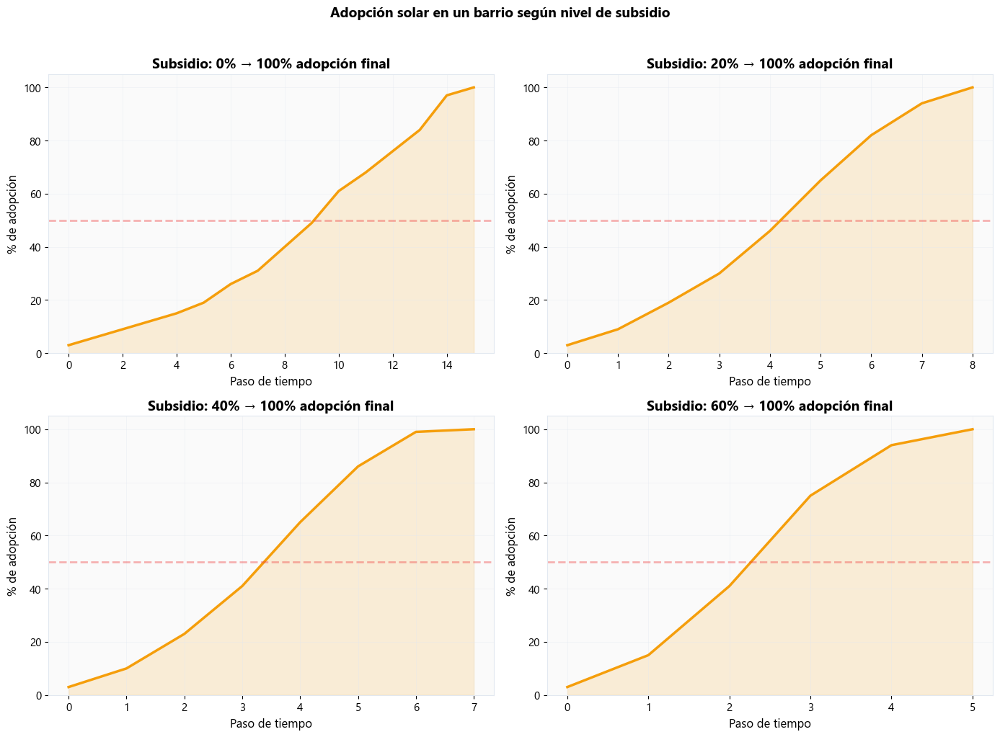
**Nota:** Existe un 'punto de inflexión': un nivel de subsidio donde la adopción
pasa de estancarse a propagarse por toda la red.
→ Esto ayuda a diseñar políticas eficientes de transición energética.
2.2 Curva S de las FNCER en Colombia 🇨🇴#
Las Fuentes No Convencionales de Energía Renovable (FNCER) — solar, eólica — están en plena fase de adopción en Colombia.
Vamos a ajustar el modelo de Bass a datos de capacidad solar instalada.
# Datos de adopción solar en Colombia (sintéticos pero realistas)
df_solar = energy_data.generar_adopcion_solar_colombia()
print("Datos de adopción solar:")
print(df_solar.to_string(index=False))
Datos de adopción solar:
año capacidad_mw instalaciones tasa_crecimiento_pct
2015 3.0 647 0.0
2016 8.5 1711 183.3
2017 55.7 12396 555.3
2018 102.5 21458 84.0
2019 141.8 25923 38.3
2020 249.5 51740 76.0
2021 409.5 74047 64.1
2022 605.6 131760 47.9
2023 868.5 172833 43.4
2024 1171.9 230047 34.9
2025 1530.2 285201 30.6
# Normalizar datos para ajustar Bass
anios = df_solar["a\u00f1o"].values
capacidad = df_solar["capacidad_mw"].values
cap_max = capacidad.max() * 1.3 # estimación del potencial total
datos_norm = capacidad / cap_max
# Ajustar p y q
p_opt, q_opt, F_ajustada = diffusion.ajustar_bass(anios, datos_norm)
print(f"\n Parámetros ajustados del modelo de Bass:")
print(f" p (innovación) = {p_opt:.5f}")
print(f" q (imitación) = {q_opt:.3f}")
print(f" Ratio q/p = {q_opt/p_opt:.0f}")
# Graficar datos vs modelo ajustado
fig, ax = plt.subplots(figsize=(10, 6))
ax.scatter(anios, datos_norm * 100, color=COLORS["accent"], s=80,
zorder=5, label="Datos observados", edgecolors="white", linewidths=1)
ax.plot(anios, F_ajustada * 100, color=COLORS["primary"], linewidth=2.5,
label=f"Modelo de Bass (p={p_opt:.4f}, q={q_opt:.3f})")
# Proyección a futuro
anios_futuro = np.arange(2015, 2035)
t_futuro = anios_futuro - 2015
F_futuro = diffusion.bass_analitica(t_futuro, p_opt, q_opt)
ax.plot(anios_futuro, F_futuro * 100, color=COLORS["primary"],
linewidth=1.5, linestyle='--', alpha=0.5, label="Proyección")
ax.axvline(x=2025, color=COLORS["danger"], linestyle=':', alpha=0.5)
ax.set_xlabel("A\u00f1o")
ax.set_ylabel("% del potencial estimado")
ax.set_title("Curva S de adopción solar en Colombia", fontweight="bold")
ax.legend()
plt.tight_layout()
plt.show()
print(f"\n**Nota:** Interpretación:")
print(f" \u2022 q/p = {q_opt/p_opt:.0f} \u2192 la imitación social domina la adopción")
print(f" \u2022 La curva S sugiere que Colombia está entrando en la fase de aceleración")
Parámetros ajustados del modelo de Bass:
p (innovación) = 0.00410
q (imitación) = 0.598
Ratio q/p = 146
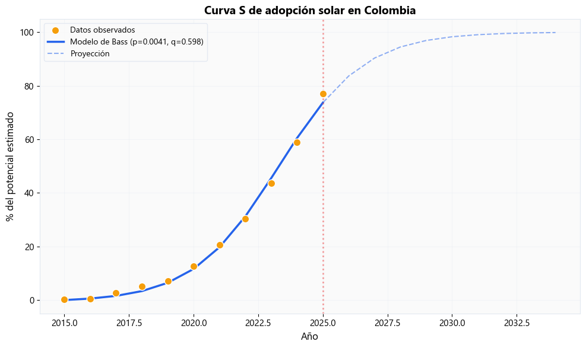
**Nota:** Interpretación:
• q/p = 146 → la imitación social domina la adopción
• La curva S sugiere que Colombia está entrando en la fase de aceleración
2.3 El mercado mayorista como red bipartita#
El Mercado de Energía Mayorista (MEM) de Colombia tiene dos tipos de actores:
Generadores (producen electricidad)
Comercializadores (la venden a usuarios finales)
Los contratos bilaterales entre ellos forman una red bipartita.
¿Quién tiene poder de mercado? → Centralidad en la red.
# Crear la red del mercado mayorista
G_mercado = energy_data.crear_red_mercado_mayorista(seed=42)
# Visualizar la red bipartita
fig, ax = plt.subplots(figsize=(12, 8))
diffusion.visualizar_red_bipartita(G_mercado, ax=ax)
plt.tight_layout()
plt.show()
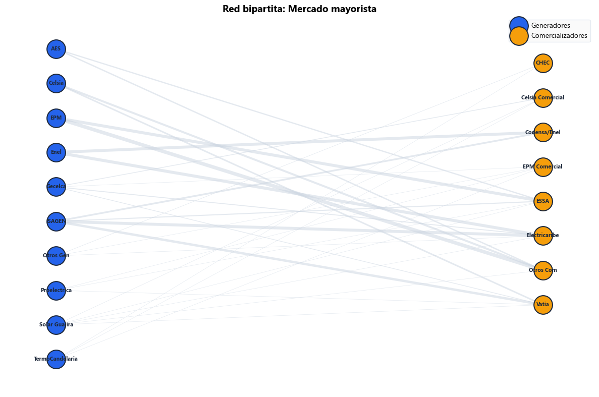
# Análisis detallado
resultados = diffusion.analizar_red_bipartita(G_mercado)
print("Métricas de centralidad en el mercado mayorista:\n")
print(resultados["metricas"].to_string(index=False))
print(f"\n Proyección sobre generadores:")
print(f" Nodos: {resultados['proyeccion_gen'].number_of_nodes()}")
print(f" Aristas: {resultados['proyeccion_gen'].number_of_edges()}")
print(f" (Dos generadores están conectados si comparten un comercializador)")
print(f"\n Proyección sobre comercializadores:")
print(f" Nodos: {resultados['proyeccion_com'].number_of_nodes()}")
print(f" Aristas: {resultados['proyeccion_com'].number_of_edges()}")
Métricas de centralidad en el mercado mayorista:
nodo tipo grado betweenness volumen_gwh
ISAGEN generador 4 0.1498 3485.3
Otros Com comercializador 4 0.0828 3096.1
Electricaribe comercializador 5 0.2492 3053.8
EPM generador 2 0.0081 2800.7
Enel generador 2 0.0229 2547.9
ESSA comercializador 5 0.1905 2366.6
Vatia comercializador 5 0.1558 2079.8
Codensa/Enel comercializador 2 0.0147 2004.6
Celsia generador 2 0.0149 1513.4
AES generador 2 0.0081 1126.5
Gecelca generador 4 0.0964 1077.8
Celsia Comercial comercializador 3 0.0823 507.7
Solar Guajira generador 5 0.2366 423.8
EPM Comercial comercializador 4 0.1047 321.8
Otros Gen generador 3 0.0923 312.2
CHEC comercializador 2 0.0097 230.9
Proelectrica generador 3 0.0844 196.0
TermoCandelaria generador 3 0.0514 177.7
Proyección sobre generadores:
Nodos: 10
Aristas: 31
(Dos generadores están conectados si comparten un comercializador)
Proyección sobre comercializadores:
Nodos: 8
Aristas: 20
2.4 Falla en cascada en el SIN#
El Sistema Interconectado Nacional (SIN) puede sufrir fallas en cascada: si una subestación falla, la carga se redistribuye, y otras subestaciones pueden sobrecargarse y fallar también.
Usamos una versión simplificada del modelo de Motter-Lai para visualizar este proceso.
[WARN] Modelo pedagógico simplificado. El SIN real tiene protecciones y redundancias.
# Crear la red del SIN
G_sin = energy_data.crear_red_sin_simplificada()
layout_sin = nx.spring_layout(G_sin, seed=42, k=2.0/np.sqrt(len(G_sin)))
# Simular falla en cascada desde un hub crítico
nodo_critico = "Ancón Sur" # Hub de Antioquia
historia_falla, cargas = diffusion.simular_falla_cascada(
G_sin, nodo_critico, capacidad_factor=1.3
)
# Resumen
print(f" Falla inicial: {nodo_critico}")
print(f" Pasos de cascada: {len(historia_falla)}")
print(f" Nodos fallados al final: {len(historia_falla[-1])} de {len(G_sin)}")
print(f" ({len(historia_falla[-1])/len(G_sin)*100:.0f}% del sistema)")
# Visualizar la cascada
fig = diffusion.plot_falla_cascada(G_sin, historia_falla, layout=layout_sin)
plt.show()
Falla inicial: Ancón Sur
Pasos de cascada: 2
Nodos fallados al final: 2 de 45
(4% del sistema)
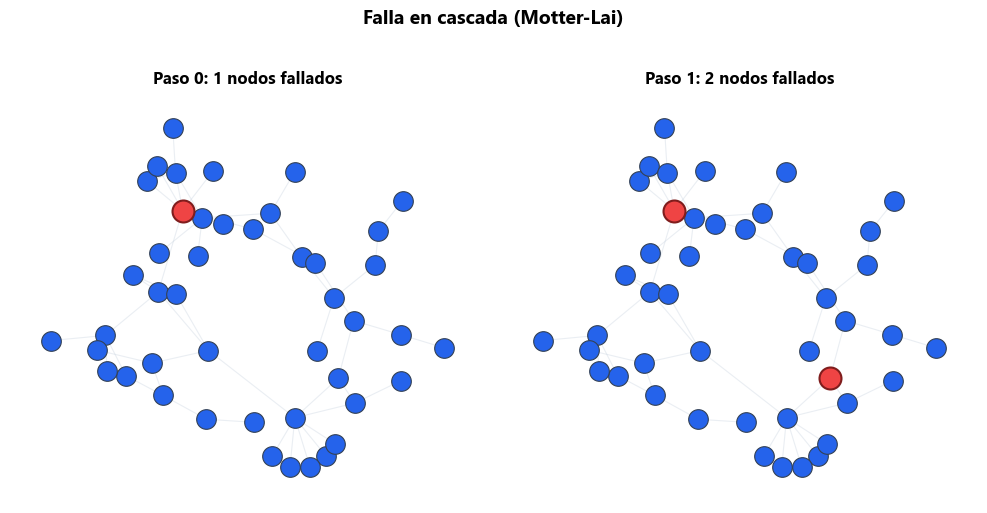
# ¿Qué nodo causa la peor cascada?
nodos_prueba = ["Ancón Sur", "Bacatá", "Cerromatoso", "Yumbo", "Pasto"]
resultados_cascada = []
for nodo in nodos_prueba:
hist, _ = diffusion.simular_falla_cascada(G_sin, nodo, capacidad_factor=1.3)
fallados = len(hist[-1])
resultados_cascada.append({
"Nodo inicial": nodo,
"Región": G_sin.nodes[nodo].get("region", "-"),
"Nodos fallados": fallados,
"% del sistema": f"{fallados/len(G_sin)*100:.0f}%",
"Pasos cascada": len(hist),
})
df_cascadas = pd.DataFrame(resultados_cascada)
print("Vulnerabilidad del SIN según nodo de falla inicial:\n")
print(df_cascadas.to_string(index=False))
print("\n**Nota:** Los hubs regionales (Ancón Sur, Bacatá) causan cascadas más severas")
print(" que los nodos periféricos (Pasto) \u2192 importancia de proteger hubs.")
Vulnerabilidad del SIN según nodo de falla inicial:
Nodo inicial Región Nodos fallados % del sistema Pasos cascada
Ancón Sur Antioquia 2 4% 2
Bacatá Cundinamarca 5 11% 2
Cerromatoso Costa 1 2% 1
Yumbo Valle 2 4% 2
Pasto Nariño 1 2% 1
**Nota:** Los hubs regionales (Ancón Sur, Bacatá) causan cascadas más severas
que los nodos periféricos (Pasto) → importancia de proteger hubs.
2.5 Comunidades en el mercado eléctrico ️#
La detección de comunidades revela grupos de actores que comercian densamente entre sí. Esto puede indicar mercados regionales o concentración.
# Detectar comunidades en la proyección de generadores
proy_gen = resultados["proyeccion_gen"]
if proy_gen.number_of_edges() > 0:
comunidades, Q = diffusion.detectar_comunidades(proy_gen)
print(f"Comunidades detectadas: {len(comunidades)}")
print(f" Modularidad Q = {Q:.3f}")
print()
for i, com in enumerate(comunidades):
print(f" Comunidad {i+1}: {sorted(com)}")
fig, ax = plt.subplots(figsize=(10, 8))
diffusion.visualizar_comunidades(proy_gen, comunidades, ax=ax)
ax.set_title("Comunidades entre generadores\n(comparten comercializadores)",
fontweight="bold")
plt.tight_layout()
plt.show()
else:
print("[WARN] La proyección no tiene aristas suficientes para detectar comunidades.")
Comunidades detectadas: 2
Modularidad Q = 0.112
Comunidad 1: ['Enel', 'Gecelca', 'Otros Gen', 'Solar Guajira', 'TermoCandelaria']
Comunidad 2: ['AES', 'Celsia', 'EPM', 'ISAGEN', 'Proelectrica']
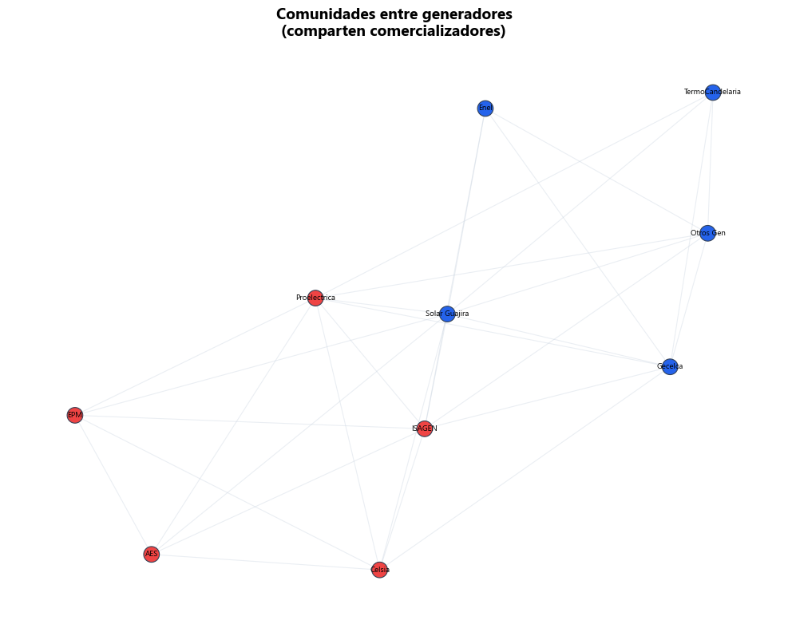
# Detectar comunidades en el SIN
comunidades_sin, Q_sin = diffusion.detectar_comunidades(G_sin)
print(f"Comunidades en el SIN: {len(comunidades_sin)}")
print(f" Modularidad Q = {Q_sin:.3f}")
print()
for i, com in enumerate(comunidades_sin):
print(f" Comunidad {i+1} ({len(com)} nodos): {sorted(list(com))[:5]}...")
fig, ax = plt.subplots(figsize=(12, 10))
diffusion.visualizar_comunidades(G_sin, comunidades_sin, layout=layout_sin, ax=ax)
ax.set_title(f"Comunidades en el SIN \u2014 Q={Q_sin:.3f}", fontweight="bold")
plt.tight_layout()
plt.show()
print("\n**Nota:** Las comunidades reflejan la estructura geográfica del SIN:")
print(" corredores regionales con pocas interconexiones.")
Comunidades en el SIN: 6
Modularidad Q = 0.681
Comunidad 1 (10 nodos): ['Ancón Sur', 'Barbosa', 'Cartagena', 'Cerromatoso', 'Envigado']...
Comunidad 2 (9 nodos): ['Bacatá', 'Chivor', 'Guavio', 'Paipa', 'Sogamoso']...
Comunidad 3 (8 nodos): ['Barranquilla', 'Colectora Guajira', 'Cuestecitas', 'El Paso Solar', 'Santa Marta']...
Comunidad 4 (7 nodos): ['Alto Anchicayá', 'Jamondino', 'Pasto', 'Popayán', 'Salvajina']...
Comunidad 5 (6 nodos): ['Betania', 'El Quimbo', 'Ibagué', 'La Rosa', 'La Virginia']...
Comunidad 6 (5 nodos): ['Arauca', 'Barranca', 'Bucaramanga', 'Cúcuta', 'Puerto Berrío']...
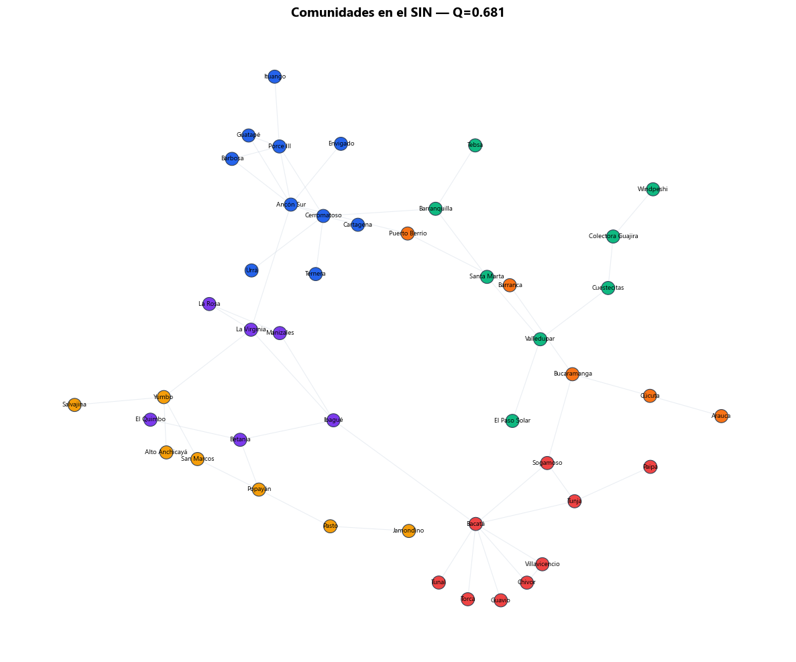
**Nota:** Las comunidades reflejan la estructura geográfica del SIN:
corredores regionales con pocas interconexiones.
Nivel 3 Nivel 3 — Profesional: Herramientas avanzadas de difusión y resiliencia#
Para quienes quieran ir más allá en sus proyectos profesionales.
3.1 Modelos basados en agentes (ABM) con Mesa#
Agent-Based Modeling permite simular difusión con agentes heterogéneos:
Cada hogar es un agente con ingresos, preferencias, vecinos
Decisiones basadas en reglas locales (umbrales, imitación, racionalidad limitada)
Patrones macro emergen de interacciones micro
Herramienta recomendada: Mesa (Python)
# Ejemplo conceptual (NO ejecutar sin instalar mesa)
from mesa import Agent, Model
from mesa.space import NetworkGrid
class HogarSolar(Agent):
def __init__(self, unique_id, model, umbral):
super().__init__(unique_id, model)
self.adoptado = False
self.umbral = umbral
def step(self):
vecinos = self.model.grid.get_neighbors(self.pos)
adoptantes = sum(1 for v in vecinos if v.adoptado)
if adoptantes / max(len(vecinos), 1) >= self.umbral:
self.adoptado = True
¿Cuándo usar ABM vs modelos de red?
Característica |
Red + umbrales |
ABM (Mesa) |
|---|---|---|
Heterogeneidad |
Limitada |
Alta |
Reglas de decisión |
Simple (umbral) |
Complejas |
Escalabilidad |
Alta |
Media |
Facilidad |
Alta |
Media |
3.2 Modelos de difusión para diseño de política energética#
Aplicaciones en política pública:
Diseño de subsidios óptimos: Usar la ventana de cascada para encontrar el umbral mínimo de subsidio que genera adopción masiva.
Selección de “semillas”: ¿Dónde instalar los primeros paneles solares de demostración? Los nodos con alta centralidad son mejores semillas.
Predicción con Bass: Calibrar p y q con datos históricos para proyectar adopción futura y planificar infraestructura.
Referencia clave:
Rogers, E.M. (2003). Diffusion of Innovations. Free Press.
Bass, F.M. (1969). “A New Product Growth for Model Consumer Durables.” Management Science, 15(5).
Watts, D.J. (2002). “A simple model of global cascades on random networks.” PNAS.
3.3 Resiliencia de redes: más allá del tipping point ️#
¿Cómo hacer una red más resiliente?
Redundancia: Agregar caminos alternativos (el SIN tiene pocos entre regiones)
Descentralización: Generación distribuida reduce dependencia de hubs
Detección temprana: Monitorear métricas de centralidad en tiempo real
Herramientas y referencias:
Motter & Lai (2002): “Cascade-based attacks on complex networks.” Physical Review E.
Colorado State University: Network Resilience Lab
Resiltech: Herramientas de análisis de resiliencia para infraestructura crítica.
En el contexto colombiano:
La interconexión Guajira es un corredor crítico para los proyectos eólicos
El corredor Antioquia-Costa depende de pocos enlaces
La generación distribuida (Ley 1715/2014, Ley 2099/2021) diversifica el riesgo
Cierre: Lo que aprendimos esta semana#
Concepto |
Herramienta |
Aplicación energética |
|---|---|---|
Contagio simple (SI) |
|
Propagación de información |
Contagio complejo |
Modelo de umbrales |
Adopción solar |
Curva S |
Modelo de Bass |
Proyección de FNCER |
Red bipartita |
Proyecciones |
Poder de mercado |
Falla en cascada |
Motter-Lai |
Vulnerabilidad del SIN |
Comunidades |
Modularidad |
Estructura del mercado |
Próxima semana: Semana 4 — Dinámica de Sistemas#
En la Semana 4 formalizaremos las ecuaciones diferenciales que ya vimos con Bass:
Diagramas de stocks y flujos
Retroalimentación con retardos
Modelado con
scipy.integratey Vensim/Stella
Puente conceptual: El modelo de Bass es una ODE. La dinámica de sistemas toma esta idea y la extiende a sistemas con MÚLTIPLES variables retroalimentadas.
print("="*60)
print(" Semana 3 completada: Dinámica sobre Redes")
print("="*60)
print()
print(" Módulos utilizados:")
print(" \u2022 diffusion \u2014 contagio, umbrales, Bass, bipartitas")
print(" \u2022 energy_data \u2014 datos del sector eléctrico colombiano")
print(" \u2022 viz \u2014 estilos y visualización")
print()
print(" \u2192 Siguiente: Semana 4 \u2014 Dinámica de Sistemas")
============================================================
Semana 3 completada: Dinámica sobre Redes
============================================================
Módulos utilizados:
• diffusion — contagio, umbrales, Bass, bipartitas
• energy_data — datos del sector eléctrico colombiano
• viz — estilos y visualización
→ Siguiente: Semana 4 — Dinámica de Sistemas